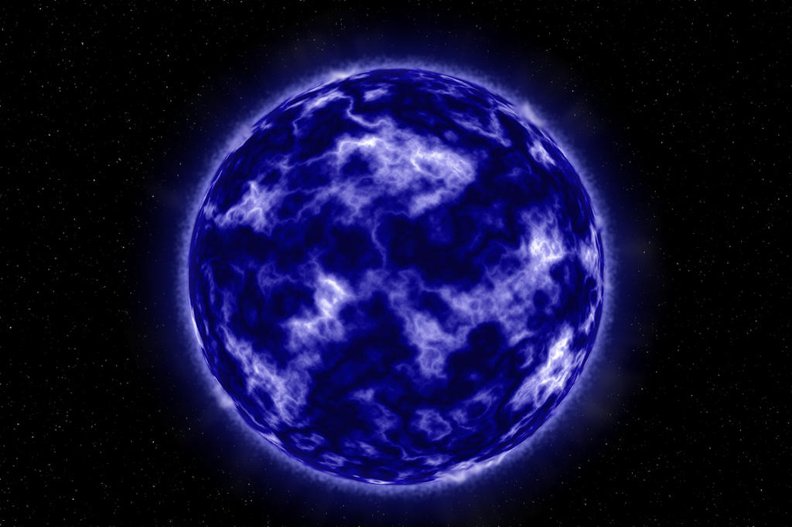
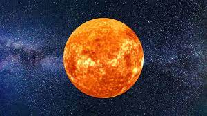
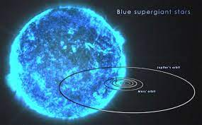
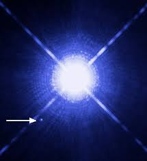
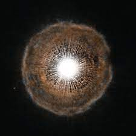
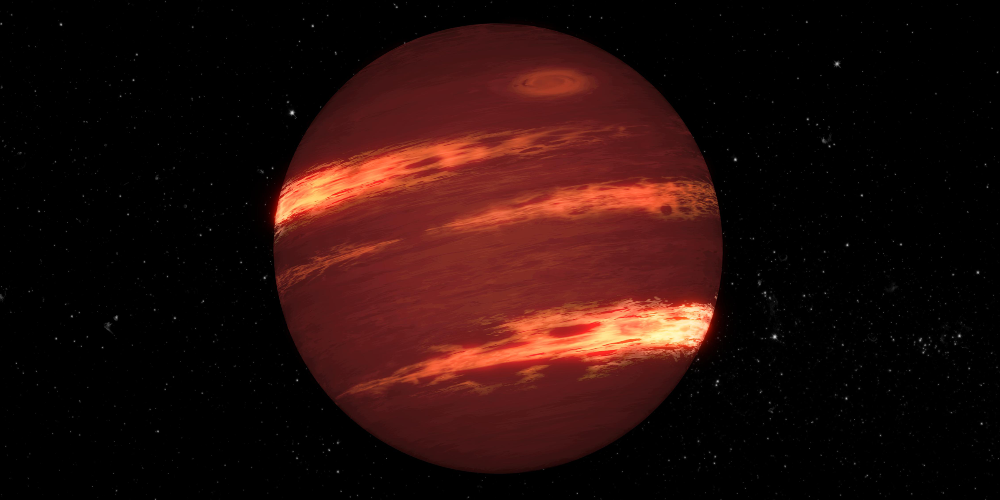

Types of Stars by Life Cycle
Stars can be classified by what stage in their life cycle they are in. Protostars are the first stage of a star's lifecycle and neutron stars are the last. Stars form when gravity begins to pull objects towards one another. As gas and dust combine, they form a large round shape that will eventually perform a nuclear fusion of hydrogen and become a star. After billions of years of burning through their hydrogen, stars begin to collapse on themselves, and the end of their life cycle has begun.

Protostar
The first stage in a star's life cycle is the protostar stage. This is the stage where gravity and inertia work to pull in gas and dust from space. When gravity's pull is stronger than the force of inertia, the gas and dust will begin to spin forming a large spherical ball. The force of gravity causes pressure on the core of the sphere preparing the star for the next stage in its life cycle. It takes a protostar approximately 100,000 years to make it to the next stage.
T Tauri Star
This is the second stage in a star's life cycle. T Tauri stars get their energy from the massive amount of gravitational pressure exerted on them. Even though there are large amounts of gravitational pressure, T Tauri stars cannot yet perform nuclear fusion. It will take an average of 100,000 million years to reach the next stage in its life cycle.
Main-Sequence Star
A star in its third stage of life is called a main-sequence star. In this stage, the star begins nuclear fusion, and the temperature of the star increases. The balance between the gravitational force and the gas pressure causes main-sequence stars to have very long life cycles that are in a state of equilibrium. How long a star will stay in this stage of life depends on how massive the star is. Stars with more mass tend to burn through their energy much faster than lower mass stars. This results in main-sequence stars having an average life span between 20 billion to 100 billion years.
Red Giant Star
When nuclear fusion of hydrogen stops, a star has reached the fourth stage in its life cycle. The equilibrium between the gravitational pull and gas pressure no longer exists. The hydrogen core begins to burn, and the star begins to grow much larger. These red giants can be as much as 100 times bigger than they were when they were main-sequence stars. This stage will last about one million years because of how quickly red giants burn through their energy resources.
White Dwarf Star
The fifth, and last, stage in a star's life cycle is the white dwarf star stage. These stars are no longer able to perform nuclear fusion. These stars will use up any remaining energy they have to create heat and light. Once their reserve is spent, they will begin to cool down and become black dwarfs with no energy to give off heat and light.
Neutron Star
Not all stars will become white dwarfs. In some cases, a star will experience a supernova event. If the star is large enough to continue nuclear fusion as it grows, the star may eventually explode outward. This is a supernova event leaving an immensely dense core behind that contains only neutrons.
Types of Stars
There are seven main types of stars, and they are grouped by a system called spectral classification. This system organizes stars into groups by their temperature, color, and luminosity (brightness). These groups are the O, B, A, F, G, K, and M-class stars.

O-Class Stars
O-class stars are the hottest stars with surface temperatures that range from approximately 30,000 degrees Kelvin and higher. These stars are blue and are very bright. Even though O-class stars are very young, there are not many of them compared to other stars in our universe. Their life cycles are usually shorter than other stars. This is because of the intensity of their heat and the immense amount of mass they have. These two factors cause O-class stars to exhaust their fuel more quickly and experience supernova events which result in the star becoming either a neutron star or a black hole.

B-Class Stars
B-class stars have surface temperatures that range from approximately 20,000 to 30,000 degrees Kelvin. These stars are blue-white and very bright. Like O-class stars, these stars are young and rare in our universe. B-class stars burn so quickly that they use up all their energy in a very short amount of time. As a result, their life cycles are rather short.

A-Class Stars
A-class stars have surface temperatures ranging from 10,000 to 20,000 degrees Kelvin and are white. They are relatively young and make up less than 1% of stars in the universe. These stars are very bright, making them visible to the unaided eye. This means you can see them without the aid of a telescope or other type of technology.

F-Class Stars
F-class stars have surface temperatures ranging from approximately 7,000 to 10,000 degrees Kelvin. They are whitish-yellow, are relatively bright, and are closer to the middle of their life cycles than O, B, or A-class stars. Approximately 3% of the main-sequence stars in our universe are classified as F-class stars.

G-Class Stars
The surface temperature of G-class stars is approximately 6,000 to 7,000 Kelvin. These stars are yellow in color, large, and have an average brightness. They are sometimes called yellow stars and almost 8% of the stars in the universe fall into this category. G-class stars are just about in the middle of their life cycle. The most famous yellow star is our sun. Since their mass is not as immense as O, B, or A-class stars, the life span of G-class stars can last for billions of years.

K-Class Stars
K-class stars have a surface temperature that is less than our Sun but that does not mean they are cold. With an average range of about 5,000 to 6,000 degrees Kelvin, these orange-colored stars do not shine as brightly as the others. These stars are relatively old in their life cycles.

M-Class Stars
M-class stars are the coolest stars having surface temperatures less than 5,000 degrees Kelvin. They are large red stars and are often called red giants. These stars are old and are nearing the end of their lifecycle. Even though they are not very bright, they can still be seen as twinkling red dots in the night sky. Making up approximately 75% of the stars, M-class stars are the most abundantly found type of star in our universe.

Types of Stars by Size
Stars can be classified by their size. Supergiants are the largest stars and dwarf stars are the smallest. In between supergiants and dwarf stars are the giant stars.
Supergiant Stars
Main-Sequence White Dwarf Stars
Giant Stars
Brown Dwarf Stars
Yellow Dwarf Stars

Supergiant Stars
As the name suggests, supergiant stars are enormous and contain an immense amount of mass. To put that in perspective, over one million of our Earths could fit into our sun, and the mass of these supergiants can range anywhere between 10 to 70 times more than our sun. They can be found at opposite ends of the spectral classification system belonging to the blue O and B-class stars or red-orange K and M-class stars. Blue supergiants have temperature ranges from 10,000 degrees Kelvin to over 50,000 degrees Kelvin. Red-orange supergiants have lower temperatures ranging from around 3,500 to 5,000 degrees Kelvin. These massive stars burn through their energy so much quicker than other types of stars. As a result, supergiants have relatively short life-spans, ranging from 10 million to 50 million years. These stars are not as abundantly dispersed in our universe because of their short life spans.

Main-Sequence White Dwarf Stars
Main-sequence stars are the most abundantly found star in the universe. Our very own sun is a main-sequence star. These stars have the most variety in characteristics with spectral classifications from O-class to M-class stars. Main-sequence white dwarf stars have very high temperatures that exceed 100,000 degrees Kelvin and are very bright. They are small in comparison to other stars, averaging a size similar to that of Earth, but have a much greater density. Their large densities contribute to their strong gravitational pull.

Giant Stars
Giant stars are not as big as supergiants, but they are still huge. They are similar to supergiant stars in life span and size, depending on where they fall in their spectral classification. Like supergiants, they have short life spans due to how quickly they burn through their helium layers, and their masses can range up to 70 times more than our sun. Giant stars are K and M-class stars with temperatures between 3,500 to 5,000 degrees Kelvin. Even though their temperatures are considered low, they are still very bright stars.

Brown Dwarf Stars
Brown dwarfs are stars that can often be mistaken for a planet. They are close in size to the planet Jupiter, but the differences lie with their mass, luminosity, temperature, and energy. These stars have masses that are at least 15 times greater than Jupiter and as Jupiter (and all other planets) reflect light, brown dwarfs create their own but do not shine like other stars. Brown dwarfs give off so little energy, making them less luminous than other stars, that it is extremely difficult to know how many there are in our universe. Brown dwarf stars have been called "failed stars" due to their inability to reach temperatures high enough to perform hydrogen fusion. This leaves the star in a state of permanence as a brown dwarf.

What is Blackhole
A black hole is a cosmic body of extremely intense gravity from which even light cannot escape. Black holes usually cannot be observed directly, but they can be “observed” by the effects of their enormous gravitational fields on nearby matter.
Structure of Blackhole
There are two basic parts to a black hole: the singularity and the event horizon. The event horizon is the "point of no return" around the black hole. It is not a physical surface, but a sphere surrounding the black hole that marks where the escape velocity is equal to the speed of light.
Blackhole Formation
A black hole can be formed by the death of a massive star. At the end of a massive star's life, the core becomes unstable and collapses in upon itself, and the star’s outer layers are blown away. The crushing weight of constituent matter falling in from all sides compresses the dying star to a point of zero volume and infinite density called the singularity.
Types of Blockchain
Astronomers generally divide black holes into three categories according to their mass: stellar-mass, supermassive, and intermediate-mass.
Stellar-mass
Supermassive
Intermediate-mass

Eample of Blackhole
The first stage in a star's life cycle is the protostar stage. This is the stage where gravity and inertia work to pull in gas and dust from space. When gravity's pull is stronger than the force of inertia, the gas and dust will begin to spin forming a large spherical ball. The force of gravity causes pressure on the core of the sphere preparing the star for the next stage in its life cycle. It takes a protostar approximately 100,000 years to make it to the next stage.